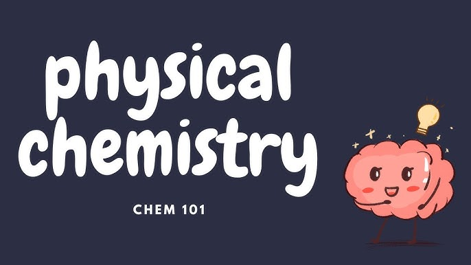
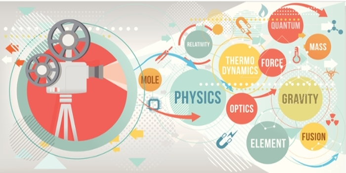

Physical Chemistry

Physical chemistry is a branch of chemistry that focuses
on understanding the fundamental principles governing
the behavior of matter at a molecular and atomic level, as
well as the various physical and chemical processes that
occur in the natural world. It serves as a bridge between
physics and chemistry, using both theoretical and
experimental techniques to study the properties and
transformations of matter.
At its core, physical chemistry encompasses a wide range
of topics, including thermodynamics, kinetics, quantum
mechanics, and spectroscopy.
These concepts are
essential for understanding the behavior of chemical
systems and predicting their reactions.

Overview of some key areas within physical chemistry:
1. Thermodynamics:
Thermodynamics is the study of
energy and heat transfer in chemical systems. It deals
with concepts like entropy, enthalpy, and Gibbs free
energy,
which provide a framework for predicting whether
a chemical reaction will occur spontaneously and the
direction it will take.
2. Kinetics:
Kinetics focuses on the rates of chemical
reactions and the factors that influence them. It helps
chemists understand the mechanisms
by which reactions
occur and how to control reaction rates through variables
like temperature, concentration, and catalysts.
3. Quantum Mechanics:
Quantum mechanics is a branch of
physics that plays a crucial role in physical chemistry. It
describes the behavior of particles
at the atomic and
molecular level and provides insights into the electronic
structure of atoms and molecules, as well as their energy
levels and spectra.
4. Spectroscopy:
Spectroscopy is the study of how matter
interacts with electromagnetic radiation, such as visible
light, UV, and IR radiation.
By analyzing the absorption,
emission, and scattering of light, chemists can gain
information about the composition, structure, and
properties of substances.
5. Electrochemistry:
Electrochemistry deals with the study
of chemical reactions involving the transfer of electrons,
such as redox reactions.
It is important in understanding
processes like corrosion, batteries, and electroplating.

6. Chemical Equilibrium:
Chemical equilibrium is the state in
which the concentrations of reactants and products in a
chemical reaction remain constant over time.
Physical
chemistry helps determine the conditions under which
equilibrium is reached and how it can be manipulated.
7. Statistical Mechanics:
Statistical mechanics applies
statistical methods to understand the behavior of large
collections of molecules. It connects the microscopic
behavior of individual particles to macroscopic
properties
like pressure and temperature.
8. Molecular Dynamics:
Molecular dynamics simulations
use computer modeling to track the movement and
interactions of atoms and molecules
over time, providing
valuable insights into the behavior of chemical systems.
9. Surface Chemistry:
Surface chemistry explores the
properties and reactions that occur at the interfaces
between solids, liquids, and gases.
It has applications in
areas like catalysis and material science.
10. Photochemistry:
Photochemistry investigates chemical
reactions triggered by the absorption of light.
It plays a
crucial role in fields like photography, photovoltaics, and
environmental chemistry.